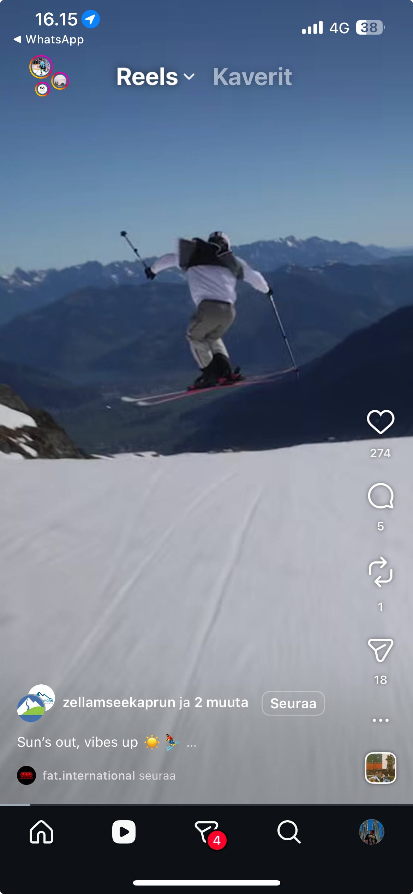

InnoDays 2026 · Österreich Werbung
"I saw something. I want to know where it is and what I can do there."
That's the entire job. Answer that question well at the moment of inspiration, and the trip plans itself.
Paste any Reel featuring Austria. We identify the location and activity type — then surface the best travel content about it from across the web. No booking, no prices. Just the answer to what you actually saw.
Paste your Reel — find the place
We extract location + activity for you
No account. No booking. Just discovery.

Reels
Sun's out, vibes up ☀️🎿
ReelRoute detected
📍 Zell am See
⛷️ Skiing
🏔️ Alps
Location +
activity found ✓
activity found ✓
Results
🗺️ 4 places found